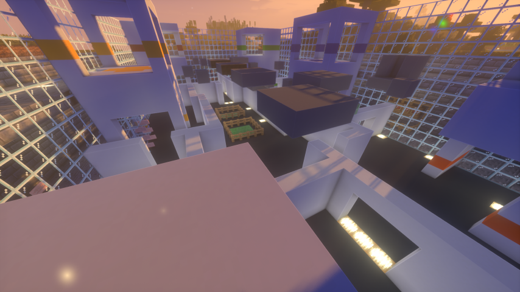

Yup! You read that right! Summer is near now! And I can feel it haha :3 *Insert melting emoji*
So I've got quite some things planned for this blog, and other things in general! So I'll talk more about them! So first off...
Easy! I'll try to keep it up! I've put quite some effort on it, and I really don't wanna just like, make it dissapear so... I'll try and upgrade it!
As I learn more HTML, I'll try to make it look better! Maybe I'll even host it on my computer instead of GitHub at some point, but that's up in the air, maybe once I get a spare computer to use as a server.
I also want to do other things because I'm part of a Content Creator SMP (It's new, small, and I really have to make up for lost time due to school) and also SnowDen (Public Lore-based SMP)
So let's talk about that last one! What will I do in The SnowDen?
Stuff.
Alright I'm joking haha. If you kept up with my Youtube Channel, you might've seen some streams from there, including something called Nation events, where an in-game Nation can host an event! They can be anything, and so far, the (only) one was Fun!
Now, I'm the "Emperor" of a nation called "The Dominion" (Full name : The Empire of Dominion's Reach), one of the few nations that started at the same time as the server. And well... It's been a bit stressful, mostly due to the fact I'm the second leader after the Original one retired due to multiple reasons (I can understand why haha, it's still a pain, but I'm trying my best)
So, with the Nation event being... Tomorrow haha (Saturday 8th), I've been doing lots of stuff, which I'll show a bit off since well... I don't think people read this blog and are ALSO in the snowden, so lemme just... (Insert heavy HTML copy pasting from old blog entries)
Yup, that's all I'm gonna show. It's a PVP arena I designed in like, less than a night, and then built in another night! (God bless you Litematica)
There's many more thingies but honestly, I don't wanna spoil stuff until wayyy later, after all, I am gonna stream it from my POV
So yeah! That's about it, for the SnowDen! Now...
Well, while I have planned tons of things, the main thing I wanna do is fixing all dead images! In fact, I just fixed, while writting this blog, a LOT of issues in Blog 2 since I used discord links, which uhh.... yeah.
Along with that, while I really like the """old""" html-only look, I do wanna try more things! Even if it means calling my boyfriend almost as many times as minutes in a year because I don't understand HTML, haha
Lastly, I wanna start well... Logging changes! So starting with this blog, I'll host a changelog! It'll have the same color scheme as the Main Pages (Turquoise), and will have subpages for versions!
For versioning, I'll just use semver, with M.m.p , so for example, this version is 1.0.0 , since :
- It's the first version made (Mayor) + It adds a new feature (Changelog)
- It adds a blog entry (minor feature)
- It fixes nothing from previous versions since... they don't exist haha.
So yeah! SemVer in a webpage, amazing.
Well, besides that, I've got nothing more to add! So...
See you next time!
- Fery